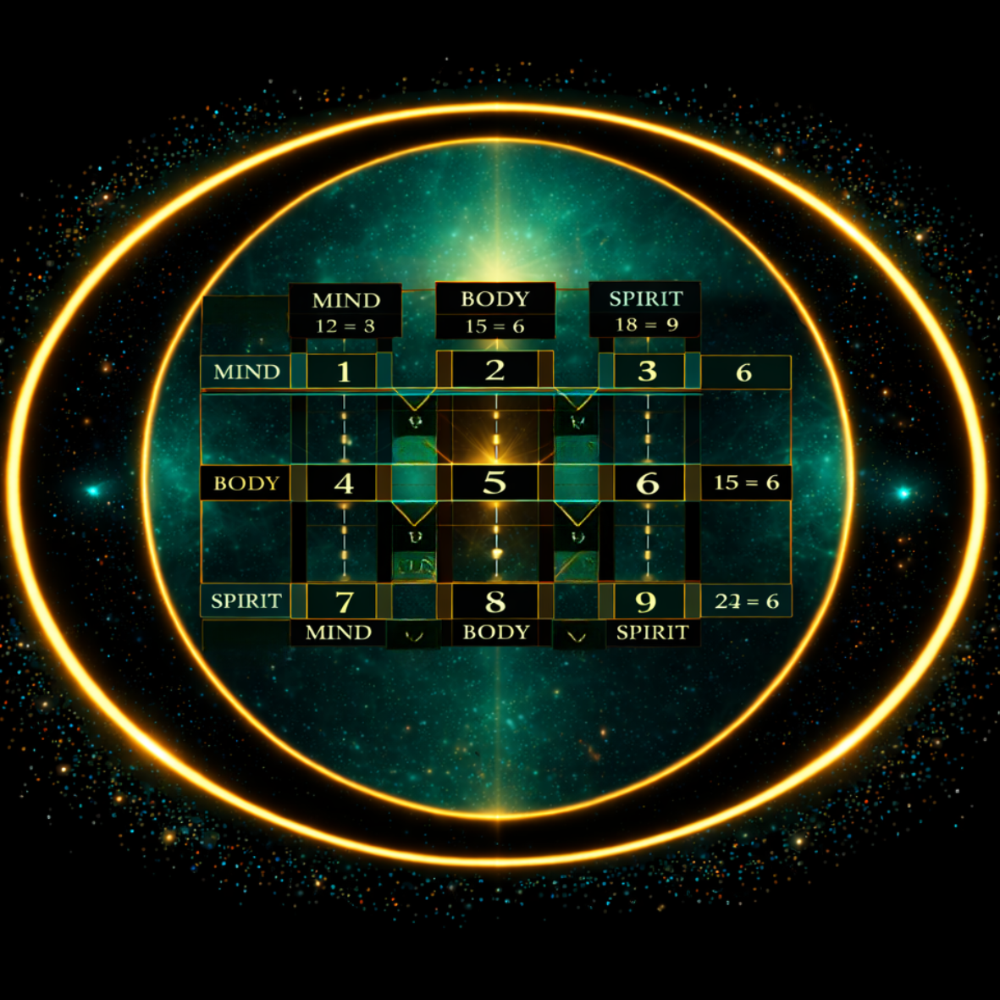

Nikola Tesla was reportedly obsessed with the numbers 3, 6, and 9. He circled buildings three times before entering. He performed tasks in sets of three. He believed these numbers held a key to understanding the universe that mainstream science was not equipped to recognise.
Whether or not the attribution is accurate, the pattern itself is real — and demonstrable. More than that, when placed inside the Codex — the 3×3 consciousness matrix at the heart of Simulation Source Code — the pattern reveals something about the structure of Mind, Body, and Spirit that goes well beyond mathematical curiosity.
The Pattern Itself
Start with the simplest observation. Take any single digit and triple it — multiply by three instances of itself — then reduce the result:
1+1+1 = 3
2+2+2 = 6
3+3+3 = 9
4+4+4 = 12 → 3
5+5+5 = 15 → 6
6+6+6 = 18 → 9
7+7+7 = 21 → 3
8+8+8 = 24 → 6
9+9+9 = 27 → 9
Every digit, tripled, reduces to 3, 6, or 9. No other digits appear. The pattern cycles through 3, 6, 9, 3, 6, 9 — three columns of three, repeating.
Finally — and this is where it becomes impossible to dismiss as coincidence — sum all digits from 1 through 9:
1+2+3+4+5+6+7+8+9 = 45 → 4+5 = 9
The entire number system, summed, returns to 9. Nine is not just the end of the cycle. It contains the cycle.
What This Looks Like in the Codex
The Codex arranges 1 through 9 in the standard numpad layout — three rows of three. Read each column vertically and sum the digits:

Mind column (1, 4, 7): 1+4+7 = 12 → 3
Body column (2, 5, 8): 2+5+8 = 15 → 6
Spirit column (3, 6, 9): 3+6+9 = 18 → 9
The three domains of consciousness — Mind, Body, Spirit — reduce to 3, 6, and 9 respectively. Not as an assigned meaning but as a mathematical consequence of which digits occupy which positions in the grid.
This is significant. It means the 3–6–9 pattern is not being imposed onto the Codex from outside — it emerges from the Codex's structure as a property of the grid itself. The three domains of human experience, mapped numerically, produce exactly the pattern Tesla identified as the key to the universe.
3, 6, and 9 are not three separate numbers. They are three phases of one cycle — the final expressions of Mind, Body, and Spirit within each complete revolution of the number system.
3, 6, and 9 as Completion Points
In the Codex, each row represents a plane of consciousness: Mind (1–2–3), Body (4–5–6), Spirit (7–8–9). The third number in each row — 3, 6, and 9 — is the completion point of that plane.
3 is the completion of the Mind row. It is where perception (1) and polarity (2) resolve into meaning-making — where the mind extracts narrative, articulates understanding, gives form to experience.
6 is the completion of the Body row. It is where structure (4) and experience (5) resolve into integration — where understanding becomes behaviour. Six frames the entire Codex structurally — it is the most pervasive frequency in the system.
9 is the completion of the Spirit row. It is where inner truth (7) and embodied power (8) resolve into release — where identity expands beyond self-reference. Because 9 contains the entire cycle within it, it is also the container of everything that came before.
The Sage Column
Read vertically, the column containing 3, 6, and 9 in the Codex is called the Sage column — the column of integration and output. It traces the path from meaning-making (3) through responsible living (6) to release into universal contribution (9). The fact that this column — the column of completion and transmission — is itself composed of the three completion numbers is a structural property of the number system that rewards exactly this kind of attention.
Why 9 Stands Apart
Nine has a mathematical property that 3 and 6 do not: multiply 9 by anything, and the result always reduces back to 9.
9×2 = 18 → 1+8 = 9
9×7 = 63 → 6+3 = 9
9×13 = 117 → 1+1+7 = 9
Nine absorbs multiplication without changing. It is the number that completes and contains the cycle. In the framework of SSC, Nine and Zero are grouped together as Aetheric numbers: Zero is the void before initiation, Nine is the void after completion. Different ends of the same state.
A Key, Not a Mystery
Tesla's instinct about 3, 6, and 9 was not mysticism. It was pattern recognition at a level most people do not look. The number system encodes a structure — a repeating cycle that organises itself around three completion points, three phases, three modes of resolution.
In the Codex, those three modes map directly onto Mind, Body, and Spirit. The pattern is not a secret hidden in mathematics. It is the mathematics making itself legible to anyone who looks at it carefully enough.